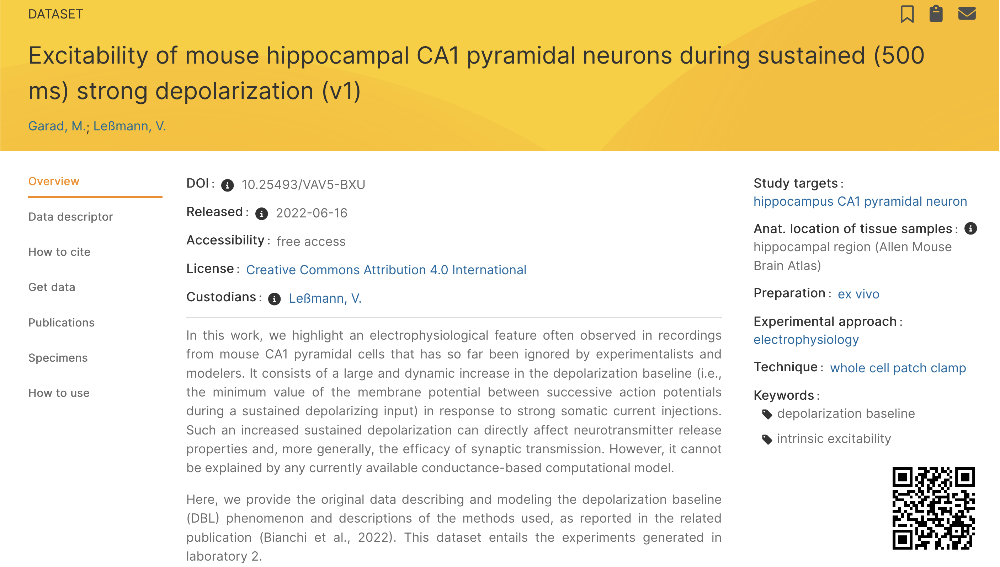
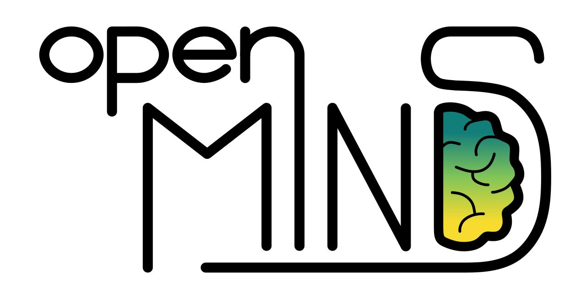
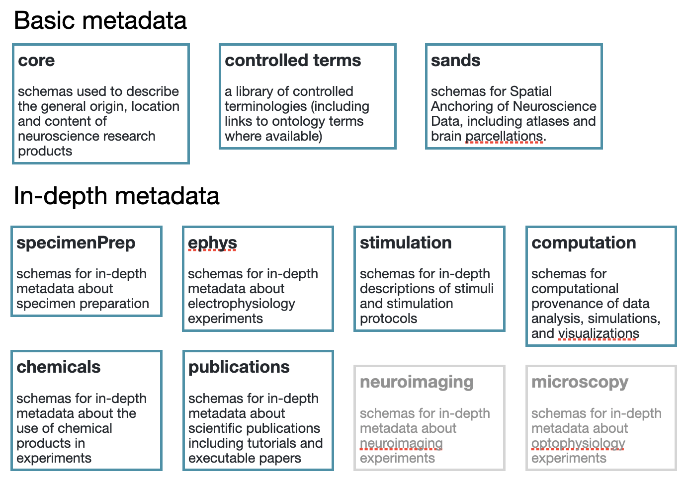
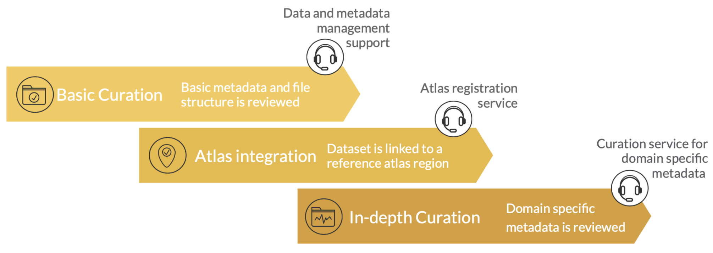
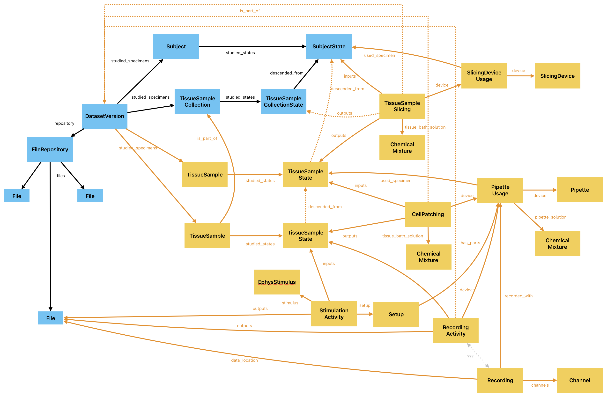

Facilitating data reuse with in-depth metadata
2 Institute of Basic Medical Sciences, University of Oslo, Oslo, Norway
3 EBRAINS AISBL, Brussels, Belgium
|
this poster online |
Background
Sharing scientific data is not an end in itself; the value of shared data is only realised when those data are reused, whether to validate publications, test new hypotheses, build computational models, or conduct meta-analyses. However, “reuse” is perhaps the most challenging of the FAIR principles to achieve. One of the main reasons for this is the need to fully understand how the data were produced: for example, the details of the experimental preparation, the recording conditions, and any stimulation or behavioural protocols used.
Many scientific data repositories provide only minimal metadata, insufficient for easily reusing the data. The EBRAINS data repository provides basic metadata for all datasets, using the openMINDS metadata framework, including properties of individual experimental subjects and samples. For a subset of EBRAINS datasets, curators have gone further, annotating datasets with extended, in-depth metadata including rich information about data files, recording setups, and stimuli.
Taking a number of these datasets as case studies, we have developed Jupyter notebooks showing how to reuse the data, focusing on recreating published figures. For each dataset we wrote one notebook based on the dataset after basic curation, and another notebook making use of the additional metadata available after extended curation. By comparing the “before” and “after” versions we aim to demonstrate the value and the limitations of in-depth metadata for facilitating data reuse.
The EBRAINS Data Repository
EBRAINS is a digital research infrastructure for neuroscience, building on the legacy of the EU Human Brain Project. One part of this infrastructure is a data repository, which hosts neuroscience datasets alongside other research products such as models and software.
All EBRAINS datasets go through a manual curation process, to ensure they have adequate and accurate metadata. Dataset providers are required to provide a detailed data descriptor giving details of the dataset structure, the file formats used, and how the data were acquired.
Metadata are stored in the EBRAINS Knowledge Graph (KG). Data files are stored at partnering European supercomputer centres, or in certain approved external repositories, with only the metadata stored in the KG.
The KG has different user interfaces, including a search UI (see screenshot below) and a REST API. Software development kits are available for Python, JavaScript/TypeScript and Java.
The openMINDS metadata framework
The EBRAINS Data Repository uses openMINDS to structure its metadata.
openMINDS is a community-developed metadata framework for linked data, with a focus on
neuroscience.

The framework comprises:
- Schema specifications for interconnected metadata models, organized into modules ➡️
- Libraries of metadata instances for well-defined terms, such as terminologies, with links to ontologies where available
- Supportive tooling for handling openMINDS in Python or MATLAB
Annotating electrophysiology datasets
In EBRAINS, curation is divided into three stages: basic curation, atlas integration and in-depth curation. All datasets go through basic curation. Where applicable, datasets are afterwards integrated into the EBRAINS atlases. In-depth curation is performed for a subset of datasets, of particular high re-use potential and/or already having structured, detailed metadata available.
The figure to the left shows part of the graph structure for a whole-cell patch clamp dataset. Nodes in blue are some of those generated during basic curation. Nodes in yellow are added during in-depth curation, and provide detailed information about individual data files and the different steps of the experimental protocol.
Case study of data reuse: minimal metadata
For the dataset shown at left (Garad & Leßmann, 2022), we have developed an executable tutorial, in the form of a Jupyter notebook, to show how the dataset can be reused. The re-use is rather simple: we tried to reproduce two figures from the published paper associated with the dataset.
The QR code ➡️ loads this notebook in the EBRAINS Lab, where it can be run directly provided you have an EBRAINS account.
Case study of data reuse: detailed metadata
We also developed a second version of the tutorial (QR code ➡️), in which the metadata needed for the analysis and plotting were obtained from the KG using the KG core API via the fairgraph Python library.
In the case studies we examined, some of the uses of metadata were:
- locating data for download
- quickly viewing descriptions/annotations in situ (e.g., in a Jupyter notebook), without having to switch to a different window (e.g., web browser)
- applying corrections/offsets to raw data (e.g., liquid junction potential)
- obtaining units for measured/recorded quantities and for stimulus parameters, allowing quick and guaranteed-correct unit conversions
- verifying that units and other metadata stored within data files have been correctly read (important when using different software from that used by the dataset providers)
- automatically reconstructing stimuli for use in data analysis
- unambiguous linkage between individual recordings and the specific experimental conditions used for each recording
- automatically partitioning of datasets by experimental variables
- partitioning of continuous recordings by experimental/stimulation conditions.
Even in such a simple example of re-use as plotting the recorded membrane potential,
metadata are used in multiple ways, as the figure to the right shows.
Perspectives
In the datasets studied so far, the structure of the data was fairly simple. We next plan to look next at datasets with more complex structures, where the availability of detailed metadata may be more critical to a successful reanalysis. We will also investigate the use of metadata for parameterizing standardized data analysis methods for datasets with similar structures. In all our case studies, the most critical missing information was the details of the data analysis methods used in the papers, underscoring the importance of sharing data analysis code alongside the data.